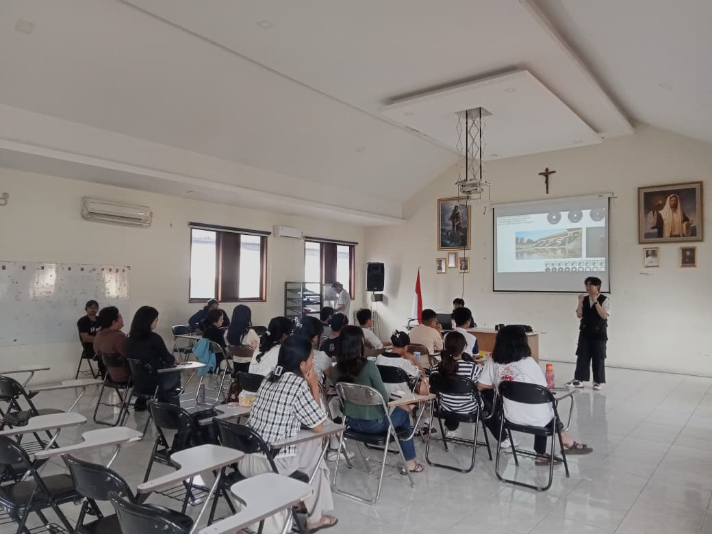
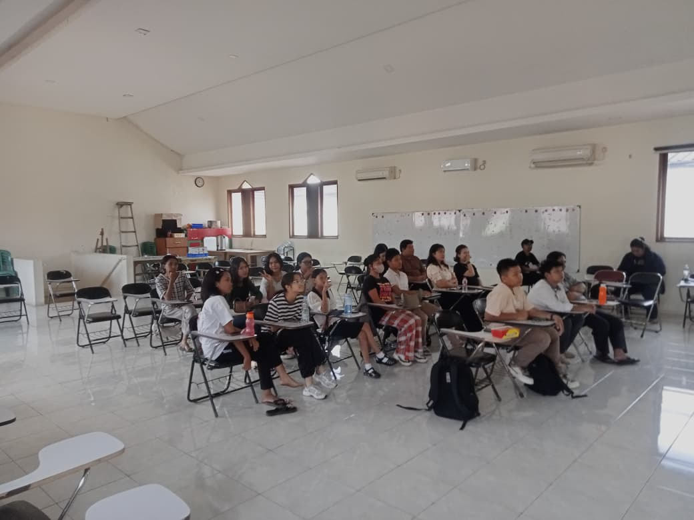
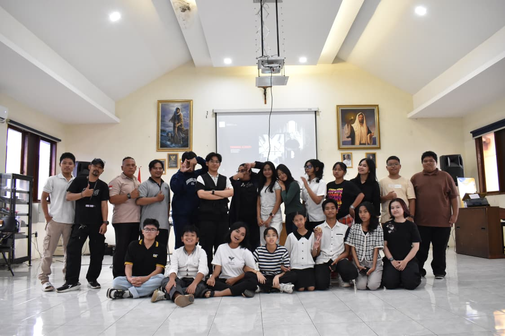

Pelatihan Kamera Komsos Paroki Kristus Raja Karawang

Membangun Keterampilan, Menghadirkan Pewartaan yang Berkualitas
Komisi Komunikasi Sosial (Komsos) Paroki Kristus Raja Karawang menyelenggarakan Pelatihan Dasar Pengoperasian Kamera yang dilaksanakan di Aula Agustinus. Kegiatan ini menjadi bagian dari upaya penguatan pelayanan komunikasi Gereja dalam mendukung karya pewartaan yang lebih profesional dan bertanggung jawab. Dalam sambutannya, Pastor Paroki, Pastor Fredy, OSC, menyampaikan pesan sekaligus berkat pembuka bagi seluruh peserta. Beliau menegaskan bahwa pelayanan Komsos bukan sekadar kegiatan teknis dokumentasi, melainkan bagian dari misi Gereja dalam menghadirkan kabar sukacita dan pengharapan. Melalui keterampilan yang diasah dengan baik, setiap dokumentasi diharapkan mampu menjadi sarana evangelisasi yang membangun iman umat.
Registrasi dan Pembukaan
Kegiatan dimulai pukul 07.30 WIB dengan registrasi dan persiapan peserta. Suasana kebersamaan sudah terasa sejak awal, dengan antusiasme peserta yang datang dari berbagai lingkungan. Pukul 07.50 WIB, acara dibuka dengan doa pembukaan serta kata sambutan dari Koordinator Komsos. Dalam arahannya, beliau menekankan pentingnya kualitas visual dalam mendukung publikasi kegiatan Gereja agar pesan yang disampaikan dapat diterima dengan baik oleh umat.
“pelatihan ini sebagai kesempatan untuk berkembang demi kemuliaan Tuhan dan pelayanan Gereja.”
Pengantar dan Perkenalan Narasumber

Pada sesi berikutnya, Pastor Fredy, OSC memberikan kata pengantar yang meneguhkan semangat pelayanan peserta. Beliau mengajak seluruh peserta untuk melihat pelatihan ini sebagai kesempatan untuk berkembang demi kemuliaan Tuhan dan pelayanan Gereja. Dilanjutkan dengan perkenalan narasumber yang akan memandu seluruh rangkaian pelatihan teknis sepanjang hari.
Pembahasan Materi dan Praktik
Materi pertama membahas Dasar-dasar Pengoperasian Kamera, meliputi pengenalan fungsi tombol, pengaturan exposure, serta pemahaman dasar komposisi gambar. Setelah sesi istirahat singkat, peserta kembali mengikuti materi kedua tentang Teknik dan Angle Pemotretan. Pada sesi ini dijelaskan pentingnya sudut pengambilan gambar, pencahayaan, serta framing agar hasil dokumentasi lebih komunikatif dan estetis. Memasuki sesi siang, peserta dibagi dalam kelompok untuk praktik pemotretan. Setiap kelompok diberikan kesempatan mengaplikasikan teori yang telah dipelajari secara langsung di area sekitar Aula Agustinus.

Evaluasi dan Penutup
Setelah istirahat makan siang, kegiatan dilanjutkan dengan presentasi dan evaluasi hasil pemotretan. Narasumber memberikan masukan konstruktif terhadap hasil karya peserta, sehingga setiap peserta dapat memahami kelebihan dan aspek yang perlu ditingkatkan. Acara kemudian ditutup dengan ucapan terima kasih dari Ketua Bidang Diakonia yang mengapresiasi partisipasi aktif seluruh peserta. Kegiatan berakhir pukul 14.00 WIB dengan doa penutup dan sesi foto bersama sebagai simbol kebersamaan dan komitmen pelayanan.

Pelatihan ini diharapkan menjadi langkah awal dalam meningkatkan kualitas dokumentasi dan publikasi kegiatan Gereja. Dengan keterampilan yang semakin terasah, Komsos Paroki Kristus Raja Karawang diharapkan mampu menghadirkan karya komunikasi yang informatif, inspiratif, dan menjadi sarana pewartaan yang membawa berkat bagi umat.